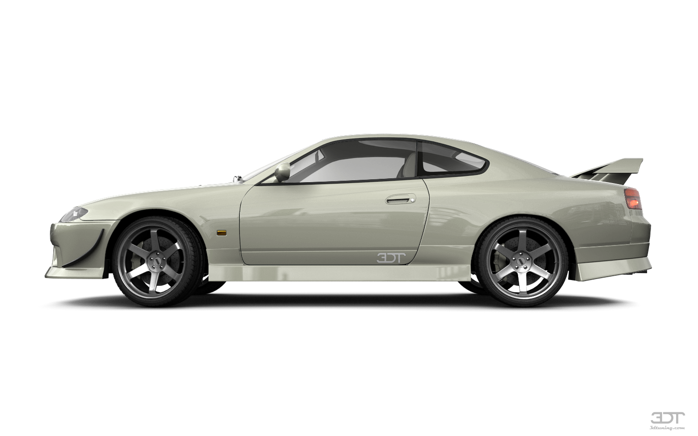
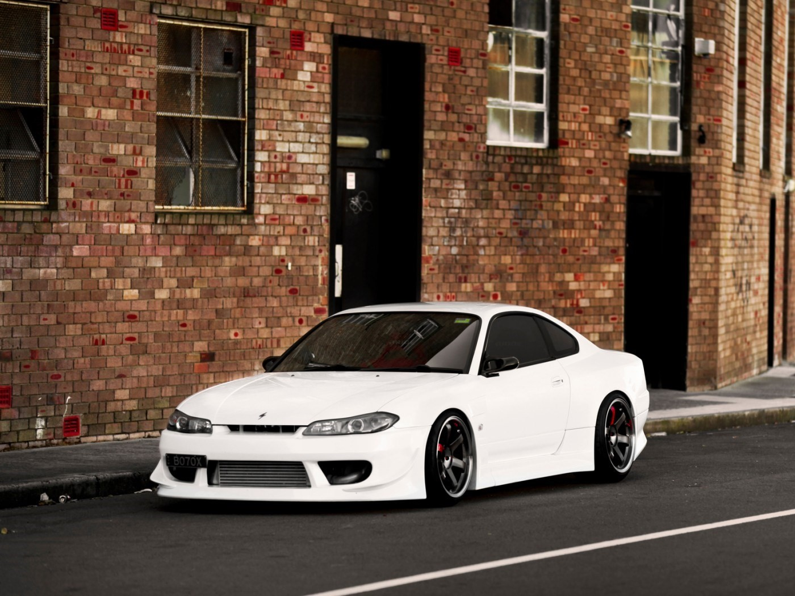
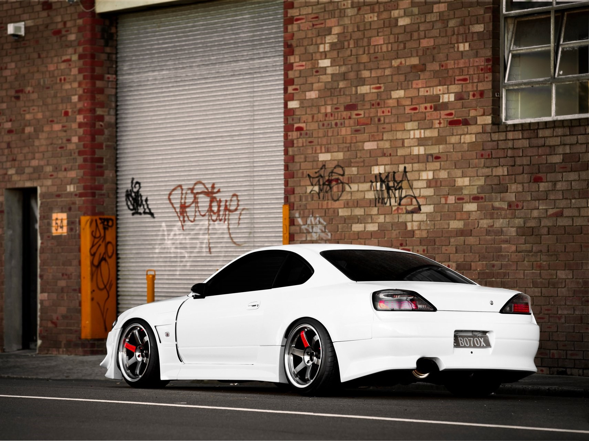

Nissan Silvia S15 - заслуженный победитель премии "Автомобиль Года 1999". И не просто так, ее конструкция и дизайн идеально подходят для модификации и гоночных соревнований.
Доработан до идеала

Эта Silvia - многократный победитель дрифт и автокросс соревнований.
Наша компания довела автомобиль для идеала, чтобы вы могли показать лучший результат на треке.
Икона стиля.

Уникальный обвес обеспечивает отличные аэродинамические качества и сногшибательный внешний вид автомобиля

Колеса Volk Racing TE37 облегчают автомобиль и выделяют и его из потока своей гоночной конструкцией
Технические характеристики
Мощность
Разгон до 100 км/ч
Крутящий момент
Тип КПП
Объем двигателя
Расход топлива
Покрышки и диски
350 л. с.
5.1 сек
321 Нм
Механическая
2.0 л
13.9 л/100 км
R18/R18